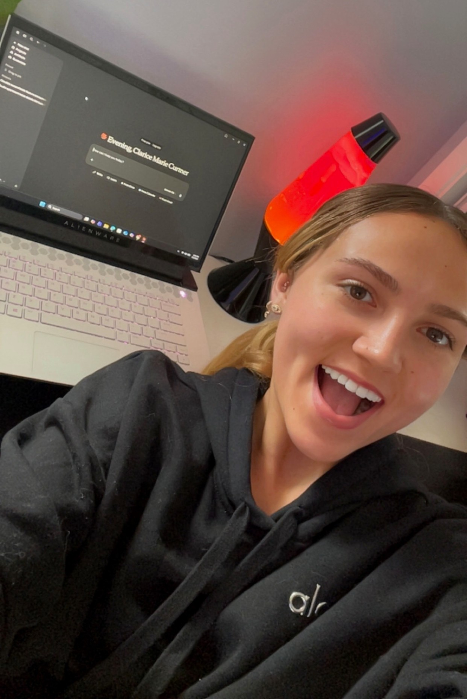
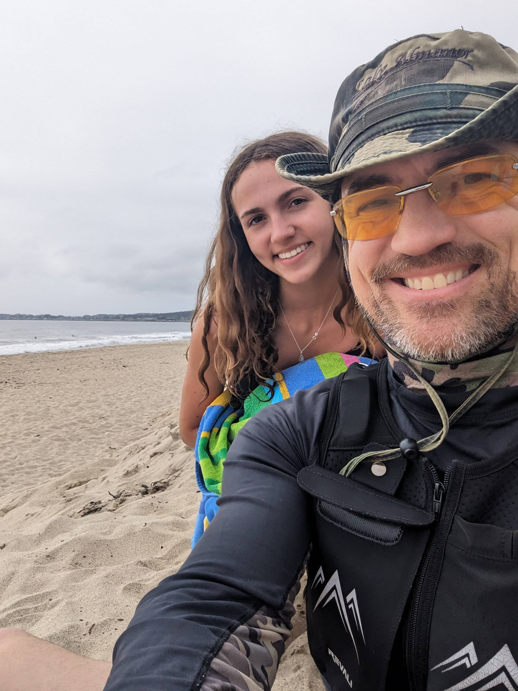

Every Backpack Drop-Off Leads Somewhere
I have a photo of us from Clarice's first day of kindergarten. She's wearing a purple Hello Kitty backpack, standing in a field of pink ice plant flowers, squinting into the sun with the kind of fearless smile that makes you simultaneously proud and terrified of how fast time moves.
That was 14 years ago. This summer, she packs a different kind of bag — for a studio apartment at 123 Cool Studio Way in San Luis Obispo, a lease that starts July 1st, and a Finance degree waiting for her at Cal Poly SLO's Orfalea College of Business.
Three hours away. No more daily chats in the kitchen. No more dad wandering in to ask about her day while she pretends to be annoyed but secretly isn't.
I'm a Technology Auditor by profession. I solve problems with systems. So when I couldn't solve the problem of her growing up and moving away, I did what any reasonable tech-obsessed dad would do...
I built her an AI brain.
What Is a 2nd Brain?
A 2nd Brain is a persistent AI memory system that connects to Claude — Anthropic's AI assistant — and remembers everything across every single conversation. Forever.
Most people use AI like a whiteboard: you write something, have a conversation, and when you close the tab... it's gone. The AI starts fresh every time. No memory of who you are, what you care about, or what you told it last week.
The 2nd Brain solves that. It's a private database that lives in the cloud, stores your thoughts, notes, and memories as intelligent searchable entries, and makes them available to Claude every time you start a new conversation. You never have to re-introduce yourself. You never lose context. Your AI actually knows you.
The system uses Supabase (your private database), OpenRouter (AI gateway for embeddings and metadata), and a custom MCP server (the bridge that connects everything to Claude). All free or near-free tiers. All yours. All private.
I built my own version of this about a year ago following Nate Jones' guide. Then I extended it — adding the ability to edit entries, delete duplicates, filter by category, and track tasks with status. Then I set it up for a few friends. And then... it was Clarice's turn.
What I Built Her
Before I walked through the technical setup, I spent time thinking about what Clarice actually needs as she starts this new chapter. She's 19, smart, athletic, social, and about to navigate apartment leases, car maintenance, university life, and a new city — mostly on her own for the first time.
So I built her 30 starter prompts — a custom onboarding kit that would pre-load her 2nd Brain with everything important about her life right now:
- "Remember this: My apartment is Studio Unit at 123 Cool Studio Way, San Luis Obispo CA 93405. Lease July 1 2026 to June 30 2027. Rent is $1,980/month. Property manager is Andrew Jones..."
- "Remember this: I drive a 2014 Mercedes E-Class 350 2D. I want to track all repairs, maintenance, and service history here."
- "Remember this: I'm starting at Cal Poly SLO as a junior in fall 2026, pursuing a Bachelor's in Finance at the Orfalea College of Business..."
- "I saved notes on 3 car repairs I've done — what were they, when did I do them, and when does Claude think my next maintenance task will be due and what might it cost?"
- "Quiz me on what I've been studying — ask me one question at a time, wait for my answer, tell me if I'm right and explain why, then move to the next question."
I emailed her the full list of 30 prompts before we started. Once her 2nd Brain was set up and connected, she opened the email on her Alienware laptop, copied all 30, and pasted them into Claude in one session. In about 20 minutes, Claude knew her apartment details, her car history, her school plans, her love of the beach, her soccer ambitions, and her interest in finance careers.
"Thank you Dad for setting up the 2nd Brain for Claude! I'm blown away. It remembers everything across conversations so I never have to start from scratch again. Total game changer! So grateful to have such a smart Dad 🤓❤️"

How the Install Works
I won't sugarcoat it — setting this up requires some technical patience. But after doing it for myself, for a few close friends, and for Clarice, I've refined the process into something anyone with basic computer comfort can follow. Here's the high-level flow:
The Browser Tab Strategy
The key insight that makes everything simpler: use GitHub as your single sign-on for all services. One GitHub account, three tabs open simultaneously:
GitHub Account (Browser Tab 1)
Create a GitHub account for the person you're setting up. This becomes the master login for everything else. Keep this tab open — you'll need it again for the keep-alive setup later.
Supabase Database (Browser Tab 2)
Open supabase.com, click the GitHub icon to sign in. This creates their private database. Name the project "open-brain." Run 4 SQL queries to set up the thoughts table, semantic search, Row Level Security, and the capture function.
OpenRouter API (Browser Tab 3)
Open openrouter.ai, sign in with GitHub. Create an API key named "open-brain." Add $10 in credits. Don't forget this step — Clarice's first attempt failed because her account had $0 balance. The error message isn't obvious.
Deploy the MCP Server (PowerShell)
Download the MCP server code from my GitHub fork (stonemonk2/OB1), set the secrets, and deploy with one command. The critical flag: --no-verify-jwt
Dual Keep-Alive Protection
Supabase free-tier projects are permanently deleted after 90 days of inactivity. I set up two independent keep-alive mechanisms for every person I install for — a GitHub Actions workflow AND a Supabase Edge Function. Both ping the database every Monday and Thursday automatically.
Connect to Claude
In Claude.ai settings, add a custom connector. Name it "2nd Brain." Paste the MCP Connection URL. That's it — all 6 tools appear: capture_thought, search_thoughts, list_thoughts, thought_stats, update_thought, delete_thought.
What I Learned Installing for Clarice
Every install teaches me something. Clarice's install improved my process more than any previous one. Here are the real gotchas that weren't in any guide:
Supabase defaults the project name to "ClariceCurtner's Project." You must manually change it to "open-brain" before clicking Create.
Excel wraps SQL in quotes when copied. Delete the opening and closing quote before running in Supabase SQL Editor or you'll get a syntax error on Line 1.
The first save attempt will fail silently if OpenRouter has $0 balance. Add $10 before the coaching session — this covers months of typical use.
This flag is mandatory on every deploy. Without it, Claude.ai's OAuth discovery hits a 401 and the connector simply won't connect — with no helpful error message.
When creating the MCP function, Supabase asks about VS Code settings, then IntelliJ settings. Answer N to both. Neither is needed.
After pasting the GitHub Actions yml, you must click "Commit changes" — then click it again in the confirmation dialog. Easy to miss under pressure.
If you see a 403 error on deploy, your CLI session expired. Run supabase login to re-authenticate, then redeploy.
Send the starter prompts to the person's email BEFORE the session. They can copy all 30 from email and paste into Claude — the fastest onboarding method we found.
The Full Tech Stack
Here's everything involved, most of it free or nearly free:
The AI interface. Clarice uses the free tier — it works great. I use Pro ($20/mo) for heavier daily use and longer context.
Free tier works · Pro $20/moPrivate PostgreSQL database with vector search.
Free tierAI gateway for embeddings and metadata extraction.
~$10 lasts monthsAccount + keep-alive Actions workflow.
FreeCommand-line tool for deploying the MCP server.
Free (via Scoop on Windows)My extended fork with 6 tools including update and delete.
Free · github.com/stonemonk2Want to Do This for Someone You Love?
After doing this install multiple times now — for myself, for friends, and for Clarice — I've packaged everything into a 2nd Brain: Personal Setup Guide. It's a structured Excel workbook that walks you through every step, tracks every credential securely, and includes the exact PowerShell commands, SQL blocks, and verification checkpoints that prevented every gotcha above.
It comes in two sections:
Your Own Install
First-time setup on your own PC. Includes one-time software installs (Git, Scoop, Supabase CLI) and the complete account and database creation flow.
Installing for Loved Ones and Friends
Once your PC is set up, adding someone new takes about an hour. This section walks through creating their GitHub account, Supabase project, OpenRouter key, and connecting everything — including how to build their custom 30-prompt onboarding guide.
The setup guide tracks API keys, database passwords, and MCP access keys. Store it only in an encrypted location (I use VeraCrypt). Never paste any of these credentials into Claude or any AI chat — including into your own 2nd Brain.

The Part That Actually Matters
I've been building things for most of my adult life. I've built a real estate portfolio, a nonprofit that's served thousands of San Bruno school children, and now a growing library of AI tools that I write about at scottcurtner.com.
But building something for Clarice felt different.
She's 19. She wakeboards at Lake Almanor, crushes it at SF Giants games, skis at Northstar, and is about to walk into the Orfalea College of Business as a junior Finance student. She doesn't need a dad who hovers. She needs one who shows up in useful ways.
So yes, I set up a Supabase database and deployed an MCP server and wrote 30 custom prompts and documented every gotcha. But really what I did was make sure that when she's sitting in her SLO studio at 11pm, trying to figure out when her Mercedes needs its next oil change or how to budget for the month... she has a thinking partner who already knows her.
One that remembers everything I helped her load in. One that will help her study for finance exams, track her car repairs, find beaches, plan her Cal Poly schedule, and figure out what internships make sense for a Finance major who loves numbers and hates being bored.
The kitchen chats will be fewer now. But she's never really starting from scratch.
"Every dad has a love language. Mine is apparently building AI infrastructure for my kids."
— Scott Curtner, proud dad / technology auditorCongratulations, Clarice. Cal Poly, you earned this. 💚